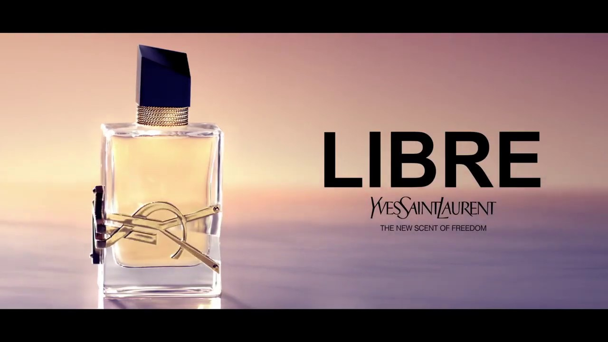
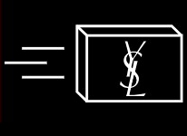
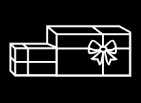
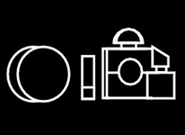

Home
LIBRE, l'Eau de Parfum iconique par Yves Saint Laurent. Une lavande florale, sensuelle et audacieuse. Le sillage d'une femme brûlant la vie par les deux bouts.
About
L'Eau de Parfum LIBRE par Yves Saint Laurent, pour une femme forte et audacieuse, qui revendique sa liberté.
Une liberté brûlante. Sans compromis. Sans limite.
Un parfum comme un cri de liberté
La liberté de vivre tout terriblement.
Work

LIVRAISON OFFERTE
DÈS 50€ D’ACHAT

OFFRES
EXCLUSIVES

ECHANTILLONS
Resume
UN FLACON COUTURE
L'Eau de Parfum Libre est encapsulée dans un flacon couture qui reflète la tension du parfum entre le masculin et le féminin.
Une silhouette géométrique aussi épurée qu'un smoking. Des chaînes or et un capot noir laqué asymétrique.
Le Cassandre, logo iconique de la marque, incrusté en majesté dans le verre tel un bijou.
LA FRAGRANCE
Libre Eau de Parfum par Yves Saint Laurent, pour une femme forte et audacieuse, qui revendique sa liberté.
La tension originale entre la sensualité brûlante de la fleur d’oranger du Maroc et l’audace d’une lavande de France revisitée au féminin.